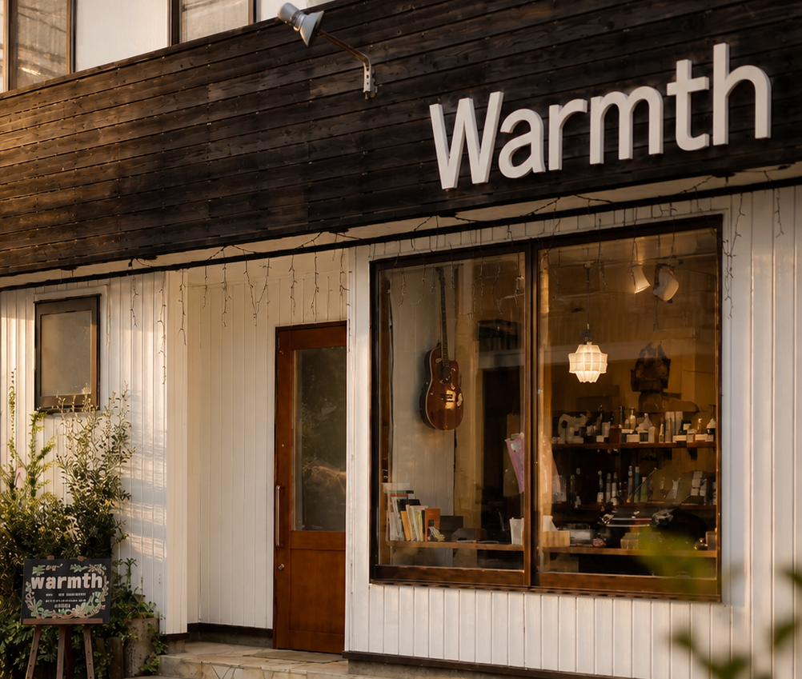
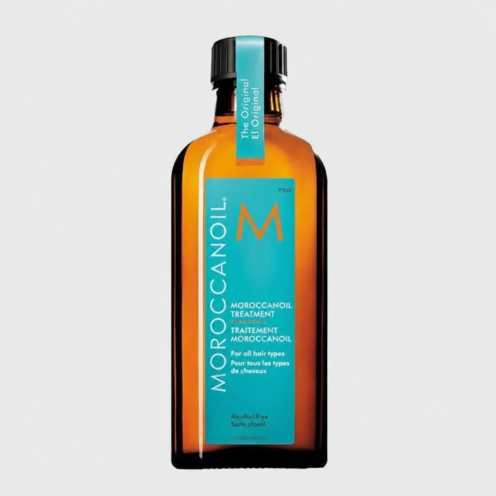
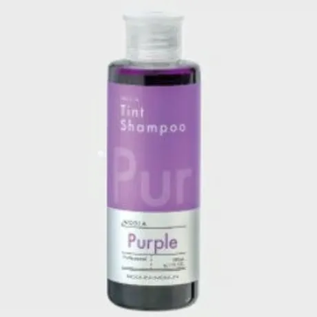

くせ・うねり
部分的なうねりも、長年の強いくせも。髪質を見てから薬剤を選ぶので、まとまりが自然に続きます。伸ばしっぱなしにしない縮毛矯正です。
縮毛矯正（カット込） ¥15,000
NIIGATA KAMEDA
亀田駅東口から歩いて一分。セット面四席の、小さな理美容室です。
くせ毛のこと、白髪のこと、頭皮のこと。
急がずに話しながら、その日のいちばんを決めていきます。

店でどれだけ整えても、次のご来店までのほうがずっと長い。その間を支える道具を選んでいます。
サロン専売のシャンプー・トリートメント・スタイリング剤を、オンラインショップでも扱っています。どれが自分に合うか分からないときは、施術中にお尋ねください。
warmth STORE を見る
指通りとツヤ。乾かす前のひと押しで変わります。
アミノ酸系。カラーの色抜けを抑えたい方へ。

お気に入りの色を、長く楽しむために。
warmth は「ぬくもり」。落ち着ける空気感と、話しやすい距離感を大切にしています。
少人数の小さな店です。混み合わないぶん、ひとりずつに時間をかけられます。ご来店前のご予約をおすすめします。
コーヒーは豆から。ハーブティーやジュースもご用意しています。カウンターでゆっくりどうぞ。
亀田駅東口を出て、駐輪場のすぐ右。住宅街に入って二軒目です。店舗前に4台停められます。
ご一緒にどうぞ。レディースシェービングは女性スタッフが担当します。
小さなお店ですが、居心地のよい雰囲気と、ひとりひとりにしっかり向き合うことを心掛けています。
オーナー・スタイリスト
髪の悩みはもちろん、いろんなお話をしながら、ずっとお付き合いできるように。
スタイリスト
メンズのニュアンスパーマ、ツイストスパイラルはお任せください。笑顔で楽しく。
スタイリスト
（お名前・ご紹介文を差し替えます）
十年以上、縮毛矯正と白髪染めでお世話になっています。枝毛になったり傷んだりというトラブルが一度もありません。そのときの髪に合わせた薬剤を使ってくださるので、安心してお任せしています。60代・女性／カット・カラー・縮毛矯正